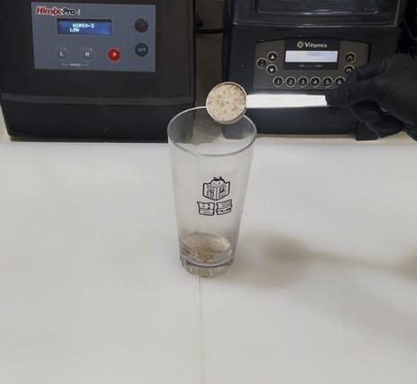
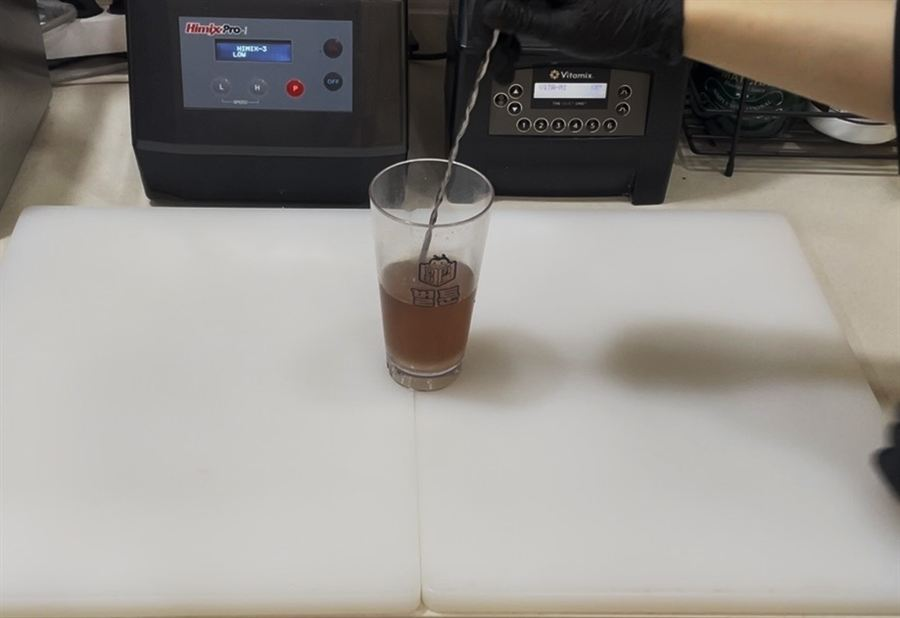
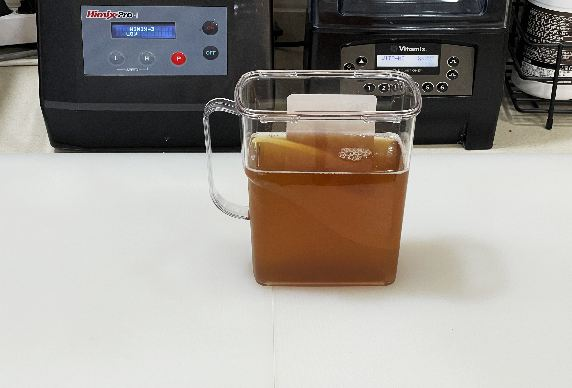

| 메뉴명 | (제로)복숭아 아이스티 ICED ONLY |
|---|---|
| 판매가격 | 3,500원 |
| 원재료 | 복숭아 아이스티파우더, 정수물, 얼음 |
| 사용 부자재 | 16oz 아이스컵, 리드뚜껑, 홀더, 빨대 |
제조방법

1
16온스 아이스컵에 제로복숭아 파우더 2T(30g)을 담는다.
16온스 아이스컵에 제로복숭아 파우더 2T(30g)을 담는다.

2
정수물 210g을 담고 섞어준다.
정수물 210g을 담고 섞어준다.

3
얼음 가득 담아 빨대와 함께 제공한다.
얼음 가득 담아 빨대와 함께 제공한다.
조리방법 - 피쳐 (대용량 제조 시)
1. 피쳐에 비율에 따라 제로복숭아 파우더, 정수물을 계량하여 담고 섞어준다.
2. 제공 시, 16온스 아이스컵에 얼음 가득 담은 후, 미리 제조한 제로 아이스티 250g을 담아 제공한다.
| 재료명 / 용량 | 1.5L (5배) | 1.7L (6배) | 2L (8배) |
|---|---|---|---|
| (제로)복숭아파우더 | 150g | 180g | 240g |
| 정수물 | 1,050g | 1,260g | 1,680g |
※ 주의사항
1. 매장 내 총 5개의 피쳐 유지하기
2. 피쳐에 상미기한 표기하기 (제조일, 시간 및 "24시간 이내 소진" 문구 추가)